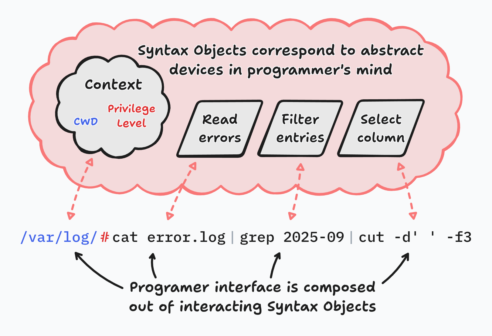

Automat: Objects As Syntax Not Data
Abstract
Automat is a skeuomorphic desktop automation tool (similar in function to AutoHotKey) with the end-goal of evolving into a fast & intuitive general purpose computing environment. This article aims to give an overview of Automat, focusing on it's distinguishing approach to object-oriented programming.
Automat's notion of objects (called Syntax Objects) are a materialization of programming abstractions. They should be applicable to other programming environments and should become a valuable tool for programming language researchers and software engineers.
Introduction to Automat
Computers have a potential to greatly improve people's lives. By automating repeatable work. By providing access to the humanity's combined knowledge & culture. By amplifying human creativity with innovative digital tools.
Yet existing software ecosystem largely fails to realize this potential. Forces that surround software engineering seem to eventually separate users & programmers, locking out a large portion of the population from commanding computers. One source of these forces lies in poor, inconsistent or obsolete decisions made when the foundational technologies have been designed. Another source, maybe the more important out of the two, lies in social barriers that limit the access to knowledge, often in subtle and hard to see ways.
Luckily we're seeing continued progress on both fronts. Growth of internet, smartphones and large language models in the last few decades inspire great optimism in more egalitarian access to technology in the future.
This work aims to further this goal by reducing the formalism required to control computers. It introduces an environment called Automat - an interface offering a skeuomorphic representation of objects in computer memory.
Metaphorical interface allows a wider audience of users to compose complex behaviors. People who see themselves as "non-technical" are not alienated by formal appearance. People who are not familiar with computer terminology can guess the function and composition rules of on-screen elements. It invites playful experimentation.
Initial goal of Automat is set on the problem of game automation. Games provide entertainment, enrich social life and serve as a powerful tool for learning and sharpening skills. Unfortunately many modern computer games, particularly the ones developed with return on investment in mind, adopt a range of techniques that produce addiction and incentivise recurring payments. Mechanisms such as virtual resource gathering, randomized rewards, classical conditioning through repetition, stimulus & reward are a common element of many games.
The opportunity that Automat sees in this environment is that game automation may offer a way to break free from addictive gameplay loops, while simultaneously allowing players to engage with the game on a deeper, more strategic level.
From the perspective of Automat's development, the variety of games creates a smooth complexity gradient - which makes it usable very early in its development as a macro playback utility with incremental additions expanding its use to more use-cases. Eventually, the same techniques that can be used for game automation may potentially be used to solve real-world problems, transitioning Automat into a general purpose computing environment.
Learning from programming languages which are in broad use today, Automat's development is not being done with expectation of profit. Monetization efforts tend to compromise the design of computing environments by introducing competing objectives. As a result commercial programming systems have had a history of difficulties in attracting user trust. Instead, Automat's development is driven by a small community following hacker culture & hacker ethics. The goal of this article is to encourage readers to join this community and push the frontier of visual programming together.
The easiest way to join is to reach out through real-time chat at automat.org/gang. Feel free to join our community to follow the project's progress. For those wishing to contribute, we encourage you to introduce yourself along with your relevant skills or interests. Automat welcomes a wide range of expertise, from playtesters to sound designers and everything in between.
Just like many tools in the physical world are designed with two "ends" in mind - one meant for being comfortable in human hand - and one efficient at doing the work. Automat's design has three "ends".
- One meant for interfacing with the person using the system,
- one meant for interoperability with other tools and
- one meant for effectively utilizing the computing hardware.
This article focuses on the first of the three.
Objects As Syntax Not Data
Automat's design is based on the idea that programmers working with a program build a mental representation of the program, composed of interacting abstract objects.
Not all programmers subscribe to this view. Notably Programming as
Theory Building by Peter Naur distances itself from it: (...) a theory held by a
person has no inherent division into parts and no inherent ordering.
Instead it adopts a more scientific, behavioral definition of theory: as the ability to answer questions and make changes to the program.
Note that this usage of "abstract objects" has nothing to do with classical OOP terminology. Instead, the term comes from philosophical conceptualism, which argues that a thinking mind generalizes knowledge through universals, which exist within the mind as abstract objects. While most universals are closely connected to linguistic terms and are easy to communicate, domain experts over time can develop their own set of abstract objects. Think of a mathematician examining a mathematical problem or a chess player planning a strategy.
Within the field of software engineering these abstract objects are commonly called abstractions and are fundamental to high-level programming languages and software architecture.
Abstractions in a computer program typically map to subgraphs of the abstract syntax tree. They may also exist within the code implicitly as invariants, or imagined results of code execution at its different stages.
Programmers use a term "readability" for programs where abstractions are evident from the source code. Conversely,
the practice of obfuscation makes programs harder to understand by breaking abstractions
while preserving program behavior.
We can attempt to translate objects from this abstract mental domain back into a concrete computing environment where each abstract object is materialized as concrete and composable object on the screen of a computer. We will call the objects produced by this translation Syntax Objects.
Novelty
Syntax Objects are a new term for real counterpart of a concept known within software engineering as abstractions.
Within the context of software engineering, the contribution of this article is that it:
- defines the category of Syntax Objects as a materialization of abstractions,
- identifies some of the properties of Syntax Objects that are helpful in their design,
- proposes a set of programmer-centric design objectives for Syntax Objects.
Example
Syntax Objects can be found in every high level programming system. Many of them are provided by the programming language through its syntax and standard library but programmers often roll out their own through user-defined functions, classes and macros.
Properties
Since the size of the source code for any problem is constant, regardless of the size of the processed data, then a round-trip translation of any program from its formal definition into abstractions and then back into Syntax Objects should produce a constant number of the latter. This means that the number of Syntax Objects for any given program is constant.
Just like variables and unlike traditional OOP objects, Syntax Objects are not data themselves. Instead they form an interface to data. Syntax Objects are typically not automatically constructed & destroyed during program execution.
One exception to this may be programs that employ macro expansion, rule-based substitutions or polymorphic code during their execution.
Just like user-defined functions with their call sites and a definition, Syntax Objects are mental primitives (atoms) from the perspective of the programmer solving one specific problem but within the system their behavior may be arbitrarily complex and open for change. This means that the atomicity of Syntax Objects is relative.
A concrete bound for the number of interacting Syntax Objects may be estimated from the psychological studies of the working memory. The Magical Number Seven, Plus or Minus Two by George Miller, suggests that a working memory can only hold about 7 distinct chunks of information at once.
A limit that may prove helpful in managing visual complexity. A known weak point of visual programming environments, summarized in a statement called the Deutsch
limit: The problem with visual programming is that you can't have more than 50 visual primitives on the screen
at the same time.
Similarly to program source code, Syntax Objects may either perform their work through interpretation or be translated into a more efficient form through compilation.
Design Criteria
The starting point for designing Syntax Objects is their mapping to mental devices that programmers use when thinking about programs. By providing an interface that resembles and supports those mental contructs, both experienced and novice programmers can work faster and more intuitively. Syntax Objects are the area within programming where careful design is most needed.
A brief introduction to the role of design can be found in Beauty Is Objective by Andrew Coyle. Although written with website design in mind, this introduction is very applicable to programming environments. In fact it is recommended to interrupt this lecture now to read that article.
We can outline some objectives for a well designed Syntax Object:
Faithful. Elementary operations offered by a Syntax Object should correspond to the transforms that programmers perform when thinking about a program.
Discoverable. When a programmer needs a specific Syntax Object but is not aware of its existence, it should be easy to find it.
Memorable. A programmer who used specific Syntax Object in the past should have an easy time recalling it when needed.
Skimmable. Programmers (including programmers without formal education) should be able to intuitively guess the function of a Syntax Object in the first seconds of seeing it for the first time.
Easy to master. Fully understanding the behavior of a Syntax Object should require as little effort as possible.
Fast to use. Time needed to perform a task using a given Syntax Object should be minimized.
Many other design objectives could be listed here but only the ones directly related to the programmer have been deemed relevant.
Syntax Objects can also facilitate interoperability and efficiency but these are not the focus of this article.
Exercise: It's valuable to go back to the bash example above. Please take a a look at that example now and try to answer the following questions:
- How would you rate the Bash programmer interface in each of the design criteria listed in this section?
- Try to imagine an alternative interface that would aim to maximize each out of those design criteria. Focus on just one criterion at a time. How could this interface look like?
Following the first two points should make it clear to the reader how Syntax Objects differ from objects used at program runtime and that they need to be designed with a different mindset.
Objects In Automat
Automat uses careful Syntax Object design to enable its users to perform tasks typically reserved to professional programmers.
Machine Code Scripting
An example of this approach is a scripting mechanism used by Automat. Automat's scripts use a metaphor of playing cards with instructions written on them, similar to many collectible card games. Each card corresponds roughly to one machine instruction and can be composed with other cards to form a program. CPU registers are presented visually as checkerboards governed by an icon. Iconic representation helps avoid jargon and makes the representation more welcoming. The instruction cards don't fully hide their low-level nature - they still show the assembly mnemonic & machine code in the corners of the card - but they do so in a way that passes as visual ornament rather than the main interface.
While this representation can be used by non-technical users, it also produces scripts that execute with the performance of hand-crafted assembly.
Thanks to closeness of mapping, this representation also enables hot code reloading where the user may freely change the code while it's executing.
Programming By Demonstration
The basic function of Automat is recording & replaying input macros. A simple macro can be created by creating a chain of simple commands & delays:
While it's fairly easy for simple cases, this approach fails for more complex sequences of keystrokes. Programming them manually would be prohibitively slow. To help with that, Automat offers several helpers:
- a Macro Recorder object that records keystrokes,
- a Hotkey object that triggers execution of other objects when a hotkey is pressed and
- a Timeline object that can drive execution of other objects according to its tracks.
Together they can be used to create an ad-hoc programming-by-demonstration environment:
Together with other objects present in Automat this enables users to mix different programming techniques - procedural programming, reactive programming, programming by demonstration.
Summary
We have defined Programmer Interface Objects - a category of objects that are used by programmers to construct programs. As opposed to classical OO objects which encapsulate data & behavor during program runtime, Syntax Objects form the human-computer interface of a programming environment. Because of their different role, Syntax Objects should be separated from runtime data structures and designed with different objectives in mind.
An example of the Automat environment demonstrates that carefully designed Syntax Objects can enable non-programmers to perform tasks typically reserved to expert programmers - such as manipulating low-level machine code and mixing different programming styles.